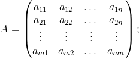
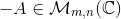
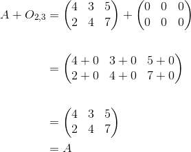

Adunarea matricelor
Suma a două matrice
Definiția M10: Suma a două matrice
Fie matricele .
Se numește suma matricelor  și
și  matricea notată definită prin cu
matricea notată definită prin cu
Matematic avem:


Altfel spus, atunci când vrem să adunăm două matrice, adunăm componentă cu componentă, respectând pozițiile corespunzătoare ale elementelor fiecărei matrice.
Exemplu:
Fie matricele și 
Calculează suma matricelor și
Rezolvare:

Observații:
- Pentru a putea aduna două matrice, acestea trebuie să aibă aceleași dimensiuni.
- Dacă dorim să adunăm mai mult de două matrice, atunci procedăm astfel: adunăm primele două matrice, suma acestora o adunăm la următoarea matrice și așa mai departe.
- O altă metodă de adunare a mai multor matrice este de a aduna în aceeași matrice elementele de pe liniile
 și coloanele ale matricelor date, așa cum se ilustrează în exemplul următor.
și coloanele ale matricelor date, așa cum se ilustrează în exemplul următor.
Exemplu:
Fie matricele și
Să se calculeze
Rezolvare:
Observație:
Din proprietățiile adunării numerelor complexe, rezultă proprietățiile adunării matricelor.
Proprietățile adunării matricelor
Propoziția M11: Proprietățile adunării matricelor
1. Comutativitatea
.
2. Asociativitatea
3. Existența elementului neutru la adunare
Există astfel încât
4. Orice matrice are o matrice opusă
Pentru orice matrice , există o unică matrice , astfel încât
Matricea se numește matricea opusă matricei
Exemplul 1: Arătăm că adunarea matricelor este o operație comutativă. (Arătăm că are loc proprietatea a.)
Fie matricele și
.
.
Exemplul 2: Arătăm că adunarea matricelor este o operație asociativă. (Arătăm că are loc proprietatea b.)
Fie matricele și

Exemplul 3: Arătăm că adunarea matricelor admite un element neutru, respectiv . (Arătăm că are loc proprietatea c.)
Fie matricea
Atunci:

Exemplul 4: Arătăm că orice matrice are o opusă pe care, dacă o adunăm cu matricea dată, va rezulta matricea nulă. (Arătăm că are loc proprietatea d.)
Fie matricea
Aflăm matricea opusă astfel:
Dar (din proprietatea de comutativitate)
Scăderea matricelor
Definiția M12: Scăderea matricelor
Scăderea matricelor se definește astfel:
Observăm că dacă atunci
Exemplu:
Fie matricele și . Să se afle diferența .
Rezolvare: